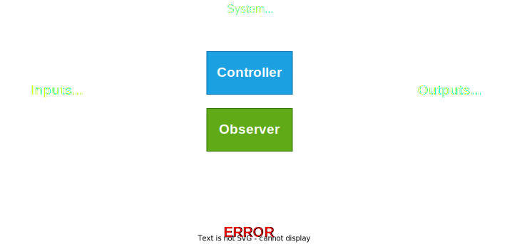

Lecture 5
Paul Fiterau
Specification
Systems development lifecycle

Outline
- Requirements engineering
- Informal (system-level) specification
- Formal specification
Requirements engineering
- Often collected during discussions/negotiations between stakeholders
- Customer
- System designer
- Software provider
- ...
It is widely acknowledged amongst researchers and industry practitioners that software projects
are critically vulnerable when the requirements- related activities are poorly performed.
P. Bourque and R.E. Fairley, SWEBOK Version 3.0, IEEE Computer Society
Types of requirements (FURPS+)
- Functionality
- Features, capabilities, security
- Usability
- Human-Computer Interaction
- Documentation
- Reliability
- Frequency of failure
- Error recovery
- Performance
- Response time
- Supportability
- Adaptability, Configurability
- Maintenance
- Many others
- Implementation
- User interface
- Licencing
Standards (examples)
- ISO/IEC/IEEE 12207:2017(E) - International Standard - Systems and software engineering -- Software life cycle processes
- 6.4.2: Stakeholder Needs and Requirements Definition process
- 6.4.3: System/Software requirements definition process
- ECSS-E-ST-40C - Software (2009)
- 4.2.4: Software requirements and architecture engineering process
Example - ATM
- Functionality
- An ATM shall dispense money to people presenting a valid debit card and entering the correct PIN
- Usability
- ATM shall be usable for visually impaired people
- ATM shall be usable for colour blind people
- Reliability
- There shall be at most one failure per calendar year
- ATM shall be operational at least 99.99% of the time
- After a restart, the ATM shall check the current balance against the main bank system
Detailed design phase
- Individual components of the system are specified/designed
- Expected behaviour of functions/methods
- Assumptions about environment
- Invariants of individual components
- Different formalisms possible
- Contracts
- Assume/Assert statements
- ...
(Function) Contracts
- Central concept of detailed specification
- Describe
intended behaviour as a function between - The
caller (user of functionality) - The
callee (provider of functionality) - Consists of a pair of
- A set of
preconditions (assumptions made by callee) - A set of
postconditions (guarantees given by callee)
Example - ATM
/**
* PRE: Card is inserted, user not authenticated
* POST: If pin is correct, then user is authenticated
* POST: If pin is incorrect, and counter < 2, then
counter is incremented by 1, and user is not
authenticated
* POST: If pin is incorrect, and counter >= 2, then card is
confiscated and user is not authenticated
*/
bool enterPIN(int pin, int * counter);
Example - Stack
#define STACK_SIZE 10
int stackData[STACK_SIZE];
int topPointer = 0;
void push(int data) {
stackData[topPointer] = data;
topPointer++;
}
int pop() {
int res = stackData[topPointer];
topPointer--;
return res;
}
Example - Stack
#define STACK_SIZE 10
int stackData[STACK_SIZE];
int topPointer = 0;
/**
* PRE: stack is not full
* POST: data is added as topmost element to the stack
and topPointer is incremented
*/
void push(int data) {
stackData[topPointer] = data;
topPointer++;
}
Specification so far
- Description still fairly high-level
- Relies on natual language
- Ambiguous
- Cannot be validated automatically
- Need for more specialized specification language
Logic
Formal specification
- Need a language to capture
- Preconditions
- Postconditions
- Invariants, assumptions, etc.
- Eventually we would also like to
- use
automation in testing - perform
formal verification
Propositional logic
Language: propositions , boolean variables
| Connective | Meaning | C Syntax |
|---|---|---|
| $\neg P$ | not P | ! P |
| $P \land Q$ | P and Q | P && Q |
| $P \lor Q$ | P or Q | P || Q |
| $P \rightarrow Q$ | P implies Q | !P || Q |
| $P \leftrightarrow Q$ | P equivalent Q | P == Q |
Example
If you are a bunny, you eat carrots.
$P$ $\rightarrow$ $Q$
| $P$ | $Q$ | $P \rightarrow Q$ |
|---|---|---|
| T | T | T |
| F | T | T |
| T | F | |
| F | F | T |
Properties of formulas
A formula containing variables P, Q, ... can be
- Satisfiable
- holds for some assignment of values to P, Q, ...
- Valid (tautology)
- always holds, independent of values of P, Q, ...
- Unsatisfiable
- does not hold, irrespective of values of P, Q, ...
- Invalid
- does not hold from some assignment of values of P, Q, ...
Examples
- $P \rightarrow Q$
- $(P \lor Q) \land \neg P \land \neg Q$
- $(P \rightarrow Q) \leftrightarrow (Q \rightarrow P)$
- $Q \rightarrow P$
Useful valid formulas
- $\neg(\Phi \land \Psi) \leftrightarrow \neg \Phi \lor \neg \Psi$
- $\neg(\Phi \lor \Psi) \leftrightarrow \neg \Phi \land \neg \Psi$
- $(true \land \Phi) \leftrightarrow \Phi$
- $(false \lor \Phi) \leftrightarrow \Phi$
- $\Phi \rightarrow true$
- $false \rightarrow \Phi$
Checking propositional formulas
- By hand
- Truth table
- Formula simplifications
- By using dedicated software tools
- SAT solvers
- Usually also provide a
model for satisfiable formulas - SAT is
NP complete , but often solveable in practice
Propositional logic in verification
- Propositional logic is relatively weak
- Cannot express many of the "interesting" properties
- Widely applied for specifying hardware
- Sometimes used for abstractions of programs
- Abstracting a boolean program with same control flow
- E.g. SLAM toolkit
First-order logic
| Connective | Meaning | C Syntax |
|---|---|---|
| ... | ... | ... |
| $\forall x : S.\,P$ | $P(x)$ for all $x \in S$ | |
| $\exists x : S.\,P$ | $P(x)$ for some $x \in S$ |
FOL - Examples
- Formulas over pre-defined datatypes (e.g. int)
- $x \geq 0 \land y \geq 42 \rightarrow x + y \geq 10$
- $\forall x: R. \exists y: R. x = \sqrt{y}$
- Formulas over "uninterpreted" symbols
- $\forall x, y: \mathbb{Z}.\, (x \geq y \rightarrow f(x) \geq f(y)) \rightarrow f(2) \geq f(1)$
- $\forall x: S.\, p(x) \rightarrow \exists y: S.\, p(y)$
FOL Properties
- Same as before
- Satisfiable
- Valid
- Unsatisfiable
- Invalid
- Can be solved with SMT solver
Program states
- Pre-, Postconditions, and invariants => distinguishing program states
- Need language/logic that supports native datatypes (int, real, etc.)
- Program variables then become formula variables!
Example
/**
* result >= a /\ result >= b /\ (result = a \/ result = b)
*/
int max(int a, int b)
{
if (a > b) return a;
else return b;
}
Concrete contract languages
- Builtin support: Ada 2012, Eiffel, Scala, Dafny, Kotlin, ...
- Support through additional tools:
- OCaml: GOSPEL
- Java: Java Modeling Language (JML)
- C: ANSI C Specification Language (ACSL)
Example
/*@
ensures
\result >= a &&
\result >= b &&
(\result == a || \result == b);
*/
int max(int a, int b)
{
if (a > b) return a;
else return b;
}
Example - Stack
#define STACK_SIZE 10
int stackData[STACK_SIZE];
int topPointer = 0;
/*@
requires topPointer < STACK_SIZE;
ensures
topPointer == \old(topPointer) + 1 &&
stackData[\old(topPointer)] == data;
*/
void push(int data) {
stackData[topPointer] = data;
topPointer++;
}
Assertions and assumptions
Assertions
- Alternative to contracts
assert statement present in many languages- Commonly used by programmers to state invariants or intentions
Example - Stack
#define STACK_SIZE 10
int stackData[STACK_SIZE];
int topPointer = 0;
/**
* PRE: stack is not empty;
* POST: topmost element is removed and returned
*/
int pop() {
int res = stackData[topPointer];
topPointer--;
return res;
}
Example - Stack
#define STACK_SIZE 10
int stackData[STACK_SIZE];
int topPointer = 0;
/**
* PRE: stack is not empty;
* POST: topmost element is removed and returned
*/
int pop() {
assert(topPointer > 0);
int oldTopPointer = topPointer;
int res = stackData[topPointer];
topPointer--;
assert(res == stackData[oldTopPointer] &&
topPointer == oldTopPointer - 1);
return res;
}
Semantics of assert
- If a formula P evaluates to
true , then assert(P) has no effect - If a formula P evaluates to
false , then assert(P) raises an error
Assertions vs contracts
- Problem 1: assert mixes specification and implementation
- Problem 2: concepts like pre-state (\old) are cumbersome
- Problem 3: assert mixes up responsibilities
- PRE => responsibility of
caller - POST => responsibility of
callee
Assumptions
- If a formula P evaluates to true, then assume(P) has no effect
- If a formula P evalutes to false, then assume(P) suspends execution
- After assume(false), it's like the program was never started
- assume is not an executable statement
Translating pre/post conditions to assume/assert
#define STACK_SIZE 10
int stackData[STACK_SIZE];
int topPointer = 0;
/**
* PRE: stack is not empty;
* POST: topmost element is removed and returned
*/
int pop() {
assume(topPointer > 0);
int oldTopPointer = topPointer;
int res = stackData[topPointer];
topPointer--;
assert(res == stackData[oldTopPointer] &&
topPointer == oldTopPointer - 1);
return res;
}
What about system-level specification?
- For detailed design: Contracts, assertions, assumptions
- For system-level specification
- Formal
temporal properties: (LTL, CTL, Timed Automata, ...) - Observers and runtime monitors
Observers
- Watchdogs check that system is reactive
- Observers generalise this concept
- Environment assumptions: Received inputs are meaningful (PRE)
- No errors: System operates within legal ranges (POST)
- System invariants are not violated
Observers
Observers
- Usually implemented in software
- Observers can monitor all system inputs and outputs
- Perform
sanity checks (derived from system specification) - Ongoing research about automated generation of observers